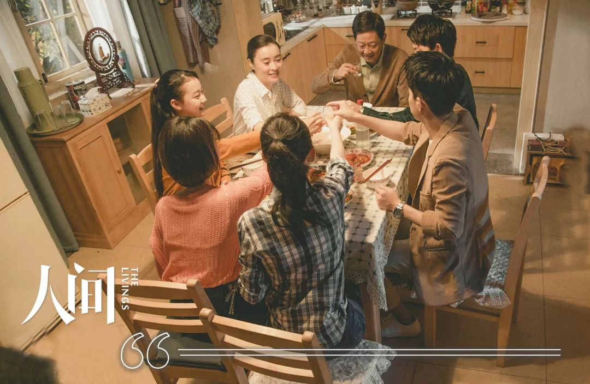

在黄冈医院做保洁的母亲，被人举报后
原文链接 备份链接 “ 那个好心工友的家人，得知母亲跟她住在一起后，疯狂地打电话，督促她让母亲搬走。现在全城封锁，租房也租不到。 —全民故事计划的第434个故事 — 一 1月21号，妹妹打电话给我，让我从上海买些口罩和莲花清瘟，她说黄州的 …


我们曾经有些隔阂，原本抗拒的、刻意回避的老家，逐渐变成了期待。
在短暂的相聚中，我们又哭又笑，心靠得更近了。

配图 | 《亲爱的孩子》剧照
前 言

这是一场战争，在新年的伊始，爆发在每一个普通的、平凡的中国人身边。
这是我们的战争，我们热切地讨论、谨慎地分析，为灾难中陨落的生命而痛惜，为医者大无畏的精神所感动，为我们能为之所做的点滴小事而不懈努力。
人生海海，我们且行且惜。
网易人间「我们的战争」特辑，讲述每一天，我们与疫情赤膊相见。
我们的战争丨连载05

2019年8月，我就跟母亲说年底不想回老家过春节了。
我劝母亲也留在杭州，等春节假期就带她去沿海城市旅游。母亲有些心动，大半辈子辛酸劳累，能在腿脚灵便的年纪出去走走看看，是她的心愿。可隔天，她还是执意要回去，还要我们一家子也一起回去。
“梦伢子，自你结婚生娃，有好几年没回家过年了。家里人都很想你，姨妈老舅也想看看小宝。”
我却觉得小宝才2岁，来回折腾还是有诸多不便，想等几年再说。
母亲又喏喏地絮叨起来，“前年春节你妹妹一家回了，按说去年该你了，你说娃儿小不方便。今年你们和妹妹都得回去，在正月里给你爸爸办个60寿宴。”
我这才明白，母亲执意要回去的原因——我几乎忘了父亲60大寿这件事，更没想过要庆贺。我不忍拒绝，就提议跟妹妹商量一下。
妹妹一家在北京生活，她接到电话便反问我：“回去过年？看爸爸喝醉了在家耍酒疯吗？听他酒醒之后虚情假意的道歉吗？听爸妈吵架吗？30年了还没听够？谁爱回去谁回去，别扯我。”
清官难断家务事，子女也厌烦家务事。
从小，我和妹妹最大的烦恼来源就是父亲酗酒暴躁和父母的争执。哪怕我们终于各自成了家，父母的关系依然紧张，家庭氛围阴冷压抑。
这几年，父亲不再向母亲“上缴”工资了，他要求经济独立，挣的钱全自己揣着，只偶尔给母亲三五百零花钱。为了这事，他俩闹得鸡犬不宁，我们开了好几次家庭会议，劝父亲把钱给母亲管理，可他总是拒绝。
母亲觉得，父亲的这种行为就是对我们整个家庭的彻底的背叛。
母亲当然也不缺钱，这些年，我和妹妹给她的养老钱也足够了，但她就是对父亲的那一搓搓钱耿耿于怀。
“你们还年轻，不懂。”可眼下，母亲翻来覆去地只是说：“终归是一家人。”我们不懂，也不愿意懂。对于母亲的想法，妹妹愤愤不平，“妈还想给他办60寿宴？咱老家里亲戚多，办个寿宴，桌席钱烟酒钱1万块打不住。”
妹妹在北京，我在杭州，都是普通的工薪阶层。回老家过春节，往返路费、生活开支，再加上走亲戚的各种礼包、红包，给父亲办寿宴……算下来，不是一笔小数目。
一个大家庭，一旦开始各自计算，难免会有人委屈。
母亲清楚我们的想法，但始终没有放弃，一直到了2019年12月初，她再次对我使出“苦情”招——“以前家里多穷啊，过年杀一头猪，你一个人可以啃掉半个猪脑壳。这些年日子越来越好，可是我们全家人坐在一起过个年，是难上加难。这次不办寿宴，下次得等10年，你爸70岁了。”
我一听这话就来气，“非得给爸办？过几年给您办60岁，不是一样热闹么？”
“老家就是这样的习俗嘛。”母亲的语气近乎哀求了，“你爸这个人就喜欢讲排场、讲风光，你们姐妹俩是他唯一的骄傲，如果给他办个热闹的寿宴，他别提会多高兴呢。乖闺女，你劝劝妹妹，今年过年都回去吧，咱家过个团圆年。”
“说到底是为了不让妈伤心。”最终，我们答应了，想来大多数时候，亲情是我们的盔甲和软肋，但偶尔也是枷锁。

2019年12月，春节的气息也越来愈浓。我给母亲和孩子们买新衣，也顺带给父亲买了一套，塞进了行李箱；家人群里，大家说着各自的买票情况，讨论着忙完寿宴后的各种计划：拜年、全家出游、带孩子们接触大自然；母亲的喜悦更是溢于言表，早早写好了年货清单、宴请宾客的名单，在和父亲视频的时候反复商议。
父亲得知我们全部回家过年，还要给他摆寿宴酒席，高兴地承诺：“一定改过自新，好好表现。”
他清醒时，还是会说好听的话的。
2020年元旦，我感冒发烧了，不得不临时取消了去东北探望公婆的行程。之后又从家里翻出几个口罩，戴着去公司上班。一下班就躲进书房，尽量减少和家人的接触，小宝就在书房门外哭喊着要我抱。我有些心软，只好屏住呼吸打开门，抱抱她，又赶紧把她推开，立刻关上门。
“你这是心疼孩子呢，还是害她呢？”见小宝哭得更厉害了，母亲呵斥我。
母亲担心感冒传染，第二天就要带小宝先回老家。送别时，我警惕地提醒：“妈，听说武汉有什么新型病毒，这趟动车会经过武汉，防备些为好。”
“整个火车里都是人，怕个么事！”母亲不以为意。
等母亲带着小宝走了，我却依旧不放心，翻出了一个公众号，才发现12月底，公号上就推送了一篇关于不明传染病的文章，里面专门提到老年人尤其要注意，佩戴口罩降低感染风险。我开始懊恼起自己没给母亲和小宝准备口罩。
接下来的几天，我开始每天都打电话询问母亲和小宝的身体状况和老家的异常情况，母亲也耐心地向我汇报：“小宝身体好得很，老家也一切都好，唯一不同就是今年没的猪，家家的猪都死了，要从五峰那边高价买过来。”
我很好奇，为什么荆州的猪死了而五峰的猪活着，母亲哈哈大笑，“这我哪晓得？这个问题，你只能去问五峰的猪了。”
2020年1月9号晚上，我跟母亲视频时发现小宝在流鼻涕，急得不得了。也是在当晚，网上出现一篇文章，提到此次传染病毒变异的概率高、感染的动物种类广。到了1月18号，又提到了“可能存在有限的人传人”。
看到这个模糊的描述，我下意识的想起了生命力顽强的“五峰的猪”。

小宝感冒，母亲就更累了，“整夜睡不得，要一直注意她有没有发热，别把伢儿烧坏了。”母亲讲起老家的一个妹妹，6岁时发高烧把一双眼睛烧瞎了。
不过片刻悲伤后，她马上又愉快地说起自己为春节做的准备：她家里的床单被罩都洗了，地板玻璃也擦了。她抱怨猪肉价格贵，但还是买了一些，姨妈舅舅们也送来了各种各样的吃食，“我们一家不种地的，年货多得冰箱快装不下了，就等你们放假回来开吃呢。”
看着视频里憔悴苍老的母亲，依旧兴致勃勃地期盼着团圆，我的鼻子有些发酸。1月19号，我迫不及待地带着大宝，踏上了回荆州的动车。
动车上，几乎没人戴口罩，我也没有。身边的两个男生一直在讨论火车票难买，也没人提起武汉新发现的病毒。到了站，我又坐上了回乡的大巴。车上20多个人，坐在我旁边的女孩，是唯一一个戴口罩的，1个半小时的车程，她没有说过一句话。
夜晚10点的乡镇，两排敞亮的路灯照着公路，安静极了。
父亲比我晚2个小时到家，一边抱怨同伴开车开错路，一边往家里搬东西——3袋大米和2箱黄酒——“老板晓得我今年回老家办寿宴，特意送的。”
“你们老板够大方的！”母亲讽刺父亲小气。
“带点粮油回来也挺好的，明天咱就开吃。爸这一天辛苦了，早些休息吧。”我赶紧打圆场，掐灭半点可能引发争吵的火星。
父亲却一改往日的暴躁，乐呵呵地劝母亲，“老总，你也别一看到我就恼火，我今年发了大几千的年终奖，都交给你搞生活。”
“几千块很多吗？别以为我稀罕你那几个臭钱。”母亲仍旧言语犀利，她说今年过年人多，开支大，父亲理所应该交生活费，“这叫AA制，懂吧？”
“我明天开始乖乖干活，你说什么我就做什么，全听领导安排，不惹祸不顶撞，保证让全家过一个愉快的春节。”父亲又转头对我说：“谢谢你，梦伢子，今年特意回来团年。你们姐妹俩还主动为我办寿宴，我蛮开心的。”
父亲一直性格暴戾，这也导致我们的关系一度十分冷淡。如今，他年岁渐高，竟也懂得说感谢的话，还带着些许温柔，不禁令我感到意外。
母亲的眉头也舒展开了，“酒店催了很多遍，要我们去定菜单，明天一早我们就过去。”
“Yes，sir！”父亲摆了个敬礼的姿势。
这种温馨的时刻在我们家显得格外的稀少和珍贵，另一边我先生也传来了好消息：公婆挂念孩子，又想来给荆州给亲家贺寿，已经从东北飞到杭州了。就等先生23号放假，一起来荆州。
这下，全家要来个超级大团圆。父母听到这个消息，欢喜几乎按捺不住了。20号的凌晨，又开始重新列起采购清单来：
“亲家爱吃什么菜？不晓得咱这边的辣锅子他们吃不吃得惯。”
“哎呀咱这儿的冬天湿冷，给他们住的房间添置一台空调吧……”
我的老家在荆州下辖的一个乡镇，每年正月初都是大大小小酒店的旺季。想在初六初八这种日子办酒席，至少得提前半年预定。
我问遍了镇上比较敞亮的酒店，只有一家初三的客户临时取消了宴会，才和我做了口头预定。
可团聚的气氛忽然被20号上午的一通电话打破了。
那天早晨，我邀请小姑妈来参加父亲的寿宴，一向爽快活泼的她，竟有些支支吾吾的。电话里，她突兀地问我，“你们家买了多少口罩？”
我说没有，她又问：“你们街上的药店还能买到口罩吗？”
在一旁的父亲听见了，立刻对他的亲妹妹表达了不满，“哪搞？要在酒席上给你加一盘清蒸口罩么？”
姑妈说，她的小女儿瑶瑶，一个小护士，年年春节值班，今年终于轮到她在家过年了。昨晚她刚到家，行李箱还没来得及打开，早上就被医院紧急召回武汉了，“好像是有什么大情况。”说着，小姑妈竟然哽咽了。父亲的语气这才柔和了许多，“这有什么好哭的，医护人员跟当兵的是一样的，抗战嘛。你带孩子不方便出门，正月间我们过来给你拜年。”
在我们当地，给谁拜年，就是更尊敬对方的表现。不料父亲的一番好意，却被小姑妈当场拒绝了，“我不出门，你们也不要来拜年，瑶瑶要我把门关起来，窝在屋里不动。”
“你说的什么话？还不要我给你拜年，我喜欢给你拜年啊？！”父亲气鼓鼓的。直觉告诉我，情况似乎不妙了。再一次开始翻看新闻寻找线索，很快我就有些不安了。先打电话给妹妹，她说自己看到新闻了，下午直飞宜昌，不到武汉中转了；又打电话给先生，商量是否要取消公婆的行程，先生说要商量一下。
妹妹一家回来的时候，正是晚餐时间。满桌子香喷喷的菜，孩子们欢快地闹腾着，父母眉开眼笑，全家都沉浸在一片喜悦之中，只有我心事重重。

等到1月21号，新闻明确了病毒“可以人传人”，全家人决定先不出门，重新商量一下寿宴的事。
当天晚上，先生发来视频说，杭州某园区已出现了疑似病例，我催促先生去买口罩，他说自己正在药店门口排队，已经等了快1个小时了，人很多。公婆也决定这次还是不来了，我微微松了一口气，问他，“要不，你也留在杭州，别过来了。”
“说什么呢？！岳父60大寿，我能不来吗？你放心，我全程戴口罩，不和任何人说话，一定安全抵达。”先生坚定地说。
我瞥见一旁的父亲，脸上闪过了一丝笑意。
第二天一早，我决定先出门看看。年关将至，乡镇的街道很热闹，到处都是置办年货的人，我戴着口罩穿梭在人群中，显得颇有些突兀。接连找了三家药店，都没有口罩卖。
进了一家诊所，稍微有些疲惫，坐在条椅上歇息了一下。外面陆续进来了两三个患者，有的说自己脑壳疼，有的说自己浑身发软没力气。医生戴着口罩，镇定自若地诊断、开药。
我的身体还是没好全，就请医生检查了一下。医生看了看我的喉咙，淡定地说：“发炎，普通感冒，给你开几盒药就行。”我不放心，“不会是那个什么新型肺炎吧？”
医生笑笑，“哪那么容易得那个肺炎，只要不是从武汉回来的。”
“我前些天坐火车经过武汉……” 我补了一句。
医生瞬间收起了笑脸，神情严肃地给我量体温。体温正常，他又嘱咐我每天都要量，有发烧迹象要马上去大医院。
诊所也没买到口罩，我拿着两盒感冒药和一支体温计回了家，又立即躲进了小房屋，自我隔离起来。母亲就在外面直叹气，“在杭州闹感冒要躲起来，回来了又躲起来。这次我总不能再带小宝跑回杭州去吧。”
她说完这句话，我心里打了个激灵，悄悄问妹妹，“如果取消父亲的寿宴，我们提前离开荆州，父亲会不会爆炸？”
“再等一天。” 妹妹冷静地说。

1月23号一早，妹妹把忙碌的父母叫到客厅。
“商量个事儿。”她说，“武汉封了。”母亲懵懂地点头，眼睛却一直看着厨房里的炖锅，父亲疑惑地问：“什么疯了？”
“封城，交通管制，公交地铁火车飞机都停了。您的60大寿，能不能先取消，后面看情况再办？”
此话一出，母亲惊讶地看着我们。
“新闻里一再告诫要减少人员流动，爸，您看可以吗？”妹妹解释。
“安全第一，我完全赞同。”父亲爽快地答应了，又给亲朋们发信息，“支持抗击病毒，减少传染风险，寿宴取消。”
母亲又惊讶地看向父亲，“不办了？已经定了酒店，请了那么多人，怎么搞？”
“这可不是开玩笑的。该通知的都通知，该改计划的都改计划。” 父亲说。
我和妹妹迅速忙碌起来，各自开始打电话、查消息，母亲则急忙转身去厨房关小了火，又赶回客厅问：“初三寿宴不搞了，春节咧？团年总还是要团的咯？”
说完这话，母亲突然就哭了起来，“我晓得你们不爱回来过年，我和你爸爸总吵嘴，惹你们厌烦。多少年了，我盼着这一天，全家老小，儿孙满堂，一个都不少的一起过个热闹年。你们才回来两三天，该不是马上又要走了？”
一瞬间，家里的人又都安静了下来。
这些年，我们一家人为了生活、学习四散分离。我和妹妹有了自己的小家后，也很少回娘家。偶尔回湖北，也是轮流“值班”。算算一家人围坐在餐桌前，听着鞭炮声迎接新年，已经是七八年前的事了。
妹妹转过身看着窗外，我也忍不住哭了。娃儿们一看大人哭，也都跟着哇哇地哭起来。转眼的功夫，满屋的泪水。
“你说这些话做什么？把娃儿们都搞得哭。”父亲红着眼眶，制止了母亲。
可母亲还是忍不住悲伤，她指着堆得满满的厨房，“我准备了好多菜，够全家吃到正月十五了。你们就要走么？这些菜怎么办？”
“娃儿们年后要上班，要是被困着回不去，影响工作怎么办？趁现在还清爽，能走就赶紧带着娃娃们走。”父亲安慰起母亲来，“我不走，哪儿都不去。我就待在屋里陪你过春节，保证把你准备的所有好菜都吃个光。”
“你想得真美，你的生活费要加倍上缴！”母亲好像在赌气，又像是撒娇。
“岂止加倍！我给你发个5位数的大红包！”素来很小气的父亲一下展开了手掌。
大家都笑了起来，家里的氛围也终于明朗了些。
我给先生打电话，他也意识到了问题的严重性，开始给我们买机票。一开始，初二还有票，可我啰嗦了几句，一会儿就被抢光了。看着父母，我想无论怎样也应该陪他们过大年三十，吃个团年饭，一起守岁才行，我的心咚咚直跳，“定初一的，过完年就走。”
可不一会儿，初一的机票也没有了，只剩下大年三十还有几张。
“走不走？”先生发来语音。
一旁的父亲坚定地说：“就明天走。一家人只要齐心，每天都是团年。”

机票定好后，时间就像突然静止了。眼前的一切，莫名变得不真实，就像一场梦。
我们曾经有些隔阂，原本抗拒的、刻意回避的老家，逐渐变成了一个所有人都期待的“超级大团圆”。短暂的相聚，一家人又哭又笑，心靠得更近了。
大年三十，父母起得很早，在厨房里忙个不停。炖土鸡、冻鱼、扣肉、肉糕、炒笋、腊肠、糯米蒸南瓜……做了满满一桌子的家乡风味。
在中国，父母对孩子最炽热的爱，大都是从厨房开始的。“我们现在团年。”父亲带领我们摆椅子、摆酒杯，把筷子平行放在空碗上。
母亲给每个酒杯里倒酒，轻声念：“各位列祖列宗、路过的亡灵们，都来吃个饭喝点酒。粗茶淡饭，过个素年。保佑孩子们健健康康、平平安安……”
父亲点燃桌底下的一大摞纸钱，也跟着念：“给你们送点小钱花，在那边打个小牌，祝你们四方发财。”
这套词，从我有记忆的时候家里就有了，30多年，年年如此。在这个即将分别的大年三十，再听这念词，我心里竟升起浓浓的暖意和无尽的乡愁。
这顿团年饭，嗜酒如命的父亲竟然破天荒的没有喝酒。他要送我们去机场，送我们离开。等全家人一起站在机场的大厅里，因为害怕离别伤感，所有人都显得有些手足无措。
母亲戴着口罩，一双眼睛温柔地看着我们，她已经没有眼泪了，满眼都只有深深的不舍和祝福。父亲也戴着口罩，笑了，“谢谢你们回来。虽然短暂，但我们两老很开心、很知足，你们多保重。”
“爸、妈，抱抱吧。”妹妹故作轻松，笑得很夸张。可她拥抱父母那的一瞬间，却也涌出了眼泪。孩子们还不懂事，都挤过去抱成一团，欢快地喊：“外公外婆，新年快乐！”
父母慈爱地摸摸孩子们的头，对我们说了句：“走吧。”
接下来，他们两个要立即赶回乡下，在天黑之前给爷爷奶奶、外公外婆“上亮”。荆州素有“三十的火，十五的灯”的旧俗。大年三十的晚上，家里的火要烧得旺，祖坟前也要照得亮堂堂的。
我忽然想起小时候，自己很喜欢跟着父母去“上亮”。暗暗的夜色降临，人们都到祖坟前去磕头。无论老少，每个人都可以许下很多的新年愿望。不一会儿，黑漆漆的田野里、山上就会散发出无数的光亮和鞭炮声。原本骇人的坟墓，在这一天的晚上，会美不胜收。
有家人在，黑暗也不可怕。再等几个小时，新年就要到了。
后记
我和妹妹到家后，向单位汇报了各自的详细行程和身体状况后，就安心在家等待开工了；
公公婆婆准备了丰盛的晚餐，欢迎我们回家。我心里还是担心，避让着想单独到书房吃，等到第二天，我的感冒症状就明显减轻了；
堂妹瑶瑶正式进入一线战斗，说自己会注意安全，让我们不要担心她；
为了尽可能减少外出，先生去附近超市购买了几袋大米和面粉、几壶油及肉类蔬菜水果等物资，他说，“超市服务井然有序，物品充足种类丰富，和平常一样。入口有专人量体温，派发口罩，会温馨提醒顾客们佩戴口罩。”
留在老家的父母，天天大眼瞪着小眼，我问母亲还待得住吗、父亲有没有偷偷跑出去，她咧开嘴笑了，“往年每个春节里，你爸爸像屁股后烧着火一样闲不住，在外面拜年游玩不归家。今年赶他出门，他都不走，没人欢迎他咯！”
我问母亲是什么感受，她说像现在这样的时刻，得追忆到他们谈恋爱的时候了——
自从有了我和妹妹，为了有饭吃，父母就外出谋生。他们一起跑，就不得停歇，一直奔跑了30多年。
而这个春节，父母也终于可以停下了匆忙的脚步。他俩朝夕相对，在家睡懒觉、刷手机、看电视、打十七胡了。
“这可以算是我有生以来，最安逸、最清闲的时刻了。”母亲说，“眼前吃喝不愁，之后怎么样以后再说，不怕，难关总会过去的。”
编辑 | 沈燕妮
美 梦
一个迟钝的人，
唠唠叨叨没完没了

本文系网易新闻人间工作室独家约稿，并享有独家版权。如需转载请在后台回复【转载】。
投稿给“人间-非虚构”写作平台，可致信：thelivings@vip.163.com，稿件一经刊用，将根据文章质量，提供千字500元-1000元的稿酬。
投稿文章需保证内容及全部内容信息（包括但不限于人物关系、事件经过、细节发展等所有元素）的真实性，保证作品不存在任何虚构内容。
其它合作、建议、故事线索，欢迎于微信后台（或邮件）联系我们。


点击以下「关键词」，查看往期内容：
群聊魔鬼 | 月嫂回忆录 |家暴 | 健身房的坑 | 生子丸
考公| 萌宠博主 | 82年的金智英 | 女大学生的毒虫男友
大牛失业 | 卧底狱警 | 娶妻改命 | 中年男人的窝囊死亡
职校老师 | 产科记事 | 改嫁 | 寻业中国 | 三大队 | 股市梦碎
扶弟魔 | 末路狂花 | 下乡扶贫| 外卖小哥 | 杀死我的女神
东北相亲 | 我放弃了科研 | 网红女同学 |与巨婴离婚的女人

原文链接 备份链接 “ 那个好心工友的家人，得知母亲跟她住在一起后，疯狂地打电话，督促她让母亲搬走。现在全城封锁，租房也租不到。 —全民故事计划的第434个故事 — 一 1月21号，妹妹打电话给我，让我从上海买些口罩和莲花清瘟，她说黄州的 …
原文链接 备份链接 文 | 万千 村口终于开始拦阻到访者了。 2月1日，在钟南山院士表示，新型冠状病毒出现“人传人”的情况的十二天之后，及在武汉这座千万级人口的城市宣布封城的九天之后，我的家乡所在的江西省十八线县城终于进入了最严重的警备状 …
原文链接 备份链接 （一） 早上去长江大堤上散步。不一会儿，远远地看见一个人走过来，很像是母亲，等她走近，一看还真是母亲。问她为什么来了，她说：“我一直在寻你。”我又问出了什么事，母亲笑道：“就是想跟你一起走走。”我们一起转身百米港走去， …
原文链接 备份链接 - 疫 情 之 下 - 只有在这样的特殊时刻，我们才体会到平平常常的日子是多么美好，多么幸福…… ” 疫情爆发得如此迅猛，让所有人始料未及。 己亥年腊月二十九，公历2020年1月23日，我去单位上年前最后一天班，那时我 …
原文链接 备份链接 气氛感觉一下子又紧张起来。 先是被村广播吵醒，躺在床上听得不十分真切，隔窗看去，只见一辆电动三轮车从屋边开过，车厢里搁一个大功率扩音器，正在播放广播，让大家尽量待在家里，哪里都别去。 然后我穿好衣服下来吃饭，母亲说起去 …